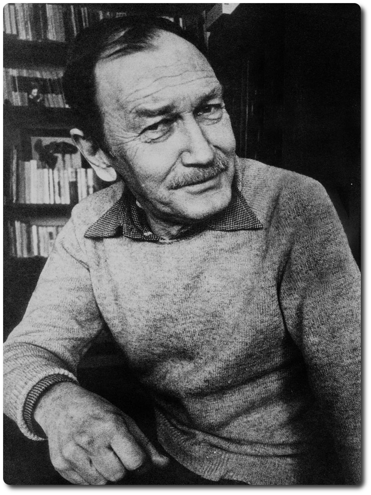

Turgut UYAR
He was born in Ankara on August 4, 1927, and died in Istanbul in 1985. Turgut Uyar graduated from the Konya Military School, then several years he served as staff officer. During this period he began to write poetry. His first book already shows the affect of several poets of the Garip writers. The poet is often described as belonging to the "second new" stage of the Garip group. During these years Uyar developed a friendship with Turkish poet Cemal Süreya. He won the Seven Hills Prize for Poetry, a prestigious award in Turkey.
His Famous Poems...
-
Göğe Bakma Durağı
- Büyük Saat
- Geyikli Gece